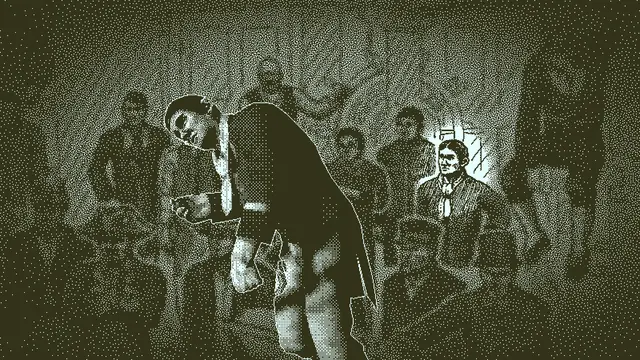
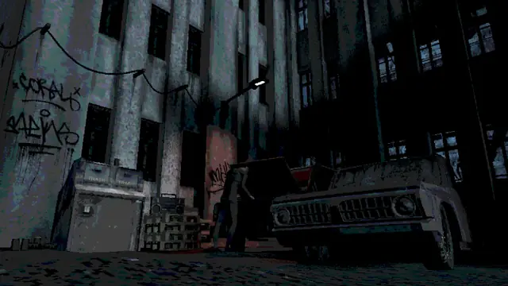
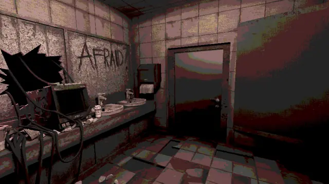
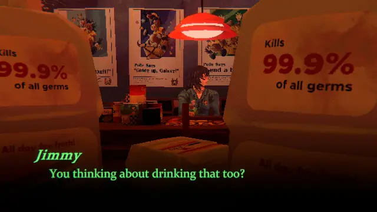
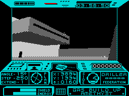
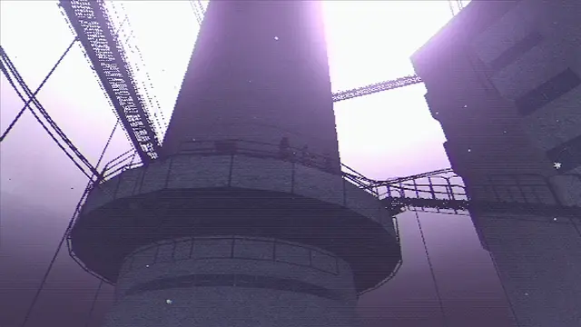
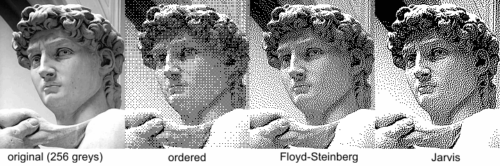
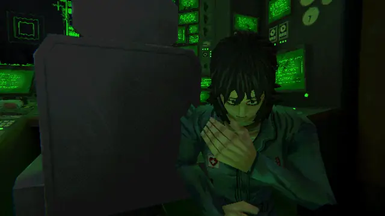

The feel
Think of it as Lucas Pope put it while starting Return of the Obra Dinn: "modern rendering techniques but only 1-bit display technology".1 With no greys to use, shading is built from patterns of differently spaced dots,2 and the eye merges them back into tones.3 Engravers build tone in a similar way: the closer their marks, the darker the area.4
Much of its pull is in what it leaves out. Pope says that on the early Macs the missing colour had to be filled in with your imagination, which to him is more powerful than showing it.2 Game Developer suggests that without this abstraction, Obra Dinn's gory murder scenes might have been hard to stomach.2 It also forgives a small team: Pope chose the low-res 1-bit style partly so he would not have to labour over high-res assets,5 and Mike Klubnika says that in his grungy style nobody notices stretched textures or objects that were never properly UV unwrapped.6
- engraved
- low-light
- grainy
- tense
- graded
- quiet
- old-print
Where it comes from
Ordered dithering turns pixels on in a set order so that black and white can suggest continuous greys, and Bryce Bayer's optimum matrix for it dates from 1973.7,8 Incentive Software's Freescape engine, first used in Driller (1987) on the ZX Spectrum, let players move freely through solid 3D worlds,9 and where a display had too few colours it told surfaces apart with dither patterns, mostly checkerboards.10 On the early Macintosh, pattern dithering was the main way to add depth, detail and shading,2 and Lucas Pope's Return of the Obra Dinn (2018) set out to make a modern 3D game look like the 1-bit Mac Plus games he grew up with.11
Core elements
Modern 3D on a 1-bit display
The scene is rendered with modern 3D techniques and only the display is held back, in Obra Dinn's case to 1 bit.1 Surma describes it as a Unity game rendered in only two colours with dithering.8
Two colours or a small ordered palette
Obra Dinn uses one bit per pixel and two colours.11 Freescape gave each area of Driller one background and one foreground colour for its 3D view on the Spectrum.10 With more colours, a palette shader such as Sam Bigos's wants them in a line from darkest to lightest, and each colour you add makes the dither show less.12
Dither patterns as shading
Shading comes from patterns of black and white pixels: the denser the black, the darker the grey.2 Grid-like Bayer patterns reproduce a range of tones more accurately, while random-like blue noise feels more organic.11 Obra Dinn uses blue noise for most of the environment and Bayer for people and objects of interest, so they stand out.8
One-pixel outlines
Pope put legibility above all else, which for him meant outlines on the geometry and careful dithering.11 He took the line colour rule from The Colony, a 1987 Mac game: black in the light, white in the dark.2 Skip outlines where hiding things matters, or where long views would fill up with distant lines.11
Pixel size and resolution
Dithering works only while the eye can combine neighbouring pixels into a shade.5 Past a certain resolution, says the artist Nathan Rees, it vanishes and the image just looks grey,2 but stretched to fill a big screen, Obra Dinn's 640 by 360 pixels were so large that Pope's eyes could not merge the patterns back into greys.11
Stable dither pattern
A pattern fixed to the screen turns moving shapes into "a wiggling mess of pixels".3 Pope put 100 hours into steadying Obra Dinn's dither, which ended up pinned for every camera rotation,3 and Surma was especially impressed that it stays stable as the camera moves and rotates.8
How to do it
Render at a low resolution
Pope worked at 640 by 360 and ran every post effect, dither and edges included, on that buffer before doubling it; native resolution looked too sharp to him.13 Render the scene at your base size first, then scale the finished image to the screen by a whole number, which keeps a checkerboard even and line widths consistent.14
Light the scene in greyscale
Obra Dinn renders everything in 8-bit greyscale and converts it to 1 bit in a final post-process pass.3 Pope kept lighting and texture in separate channels so each got its own dither curve: lighting stayed sharp, with only black, 50% and white, while textures were pushed towards white and used the full range of shades.13
Threshold against a tiling pattern
Compare each pixel with the matching dot of a tiling dither pattern: if the pixel is brighter, it becomes white, otherwise black.3 A Bayer matrix divided by its number of cells works as that threshold map, tiled across the image.8 Each pixel is handled on its own, so the whole pass runs on the GPU as a shader, as it does in Obra Dinn.8
Dither between palette colours
For more than two colours, put the palette in a texture whose colours run from darkest on the left to lightest on the right, and dither between them; the more colours it holds, the less the dither shows.12 The threshold texture is usually an 8 by 8 or 16 by 16 Bayer matrix, set to repeat, with no filtering.12
Draw one-pixel outlines
A standard edge-detection shader, working from depth and normals, gave Pope missing edges and thick lines.1 Instead, he gave each face a colour from its object's position and its normal, then drew pixel-perfect lines between the colour areas in a post-process.1 The lighting decides whether each line is black or white, so edges stay visible in the dark.13
Pin the pattern to the camera
A pattern locked to the screen swims as the camera moves.3 Pope first shifted it by one screen for each field of view the camera turned, then mapped it onto a sphere around the camera, thresholded at 2x and scaled down to curb aliasing.3 That pins it for every rotation, though not for walking.3 Rune Skovbo Johansen's surface-stable fractal dithering goes further: its dots stick to surfaces yet keep roughly the same size on screen.15
Test it in compressed video
Video compression is not built for 1-bit images: crisp dots blur and grey pixels appear where there were none.2 Pope gave Obra Dinn's environments a random-looking pattern because compressors can make a regular one look much worse.2
Cheat sheet
Do
- Use dithering as little as you can, and let the lines carry the shapes.11,5
- Keep geometry simple, tune textures for the dither and use lower-contrast colours.5
- Give characters enough triangles for a clean silhouette, which still matters at low resolution.16
- Bring the camera close to anything the player must recognise, such as faces, so the dither has enough pixels to work with.2
Avoid
- Too high a resolution. Past a point the dither just looks grey,2 and at 1280 by 720 Pope found Obra Dinn's one-pixel lines too thin and its cheap modelling and texturing exposed.5
- Stretching a small frame across a big screen and stopping there. Obra Dinn's huge pixels, high contrast and dither were too uncomfortable for long play until Pope stabilised the pattern and raised the resolution to 800 by 450.11
- One dither curve for lighting and texture together. Pope found it much harder to read, with the dither interfering with the edge lines.13
- Baked ambient occlusion and global illumination under a 1-bit dither: they turn into extra dither near the edges, right where the lines are.13
Tools and tutorials
- Return of the Obra Dinn devlog
Lucas Pope's own posts, including a long one on keeping the dither stable.3
- Surface-Stable Fractal Dithering
Rune Skovbo Johansen's open-source dither, whose dots stick to surfaces as the camera moves.15
- Godot dither shader
A post-process for Godot with a palette texture and a threshold texture, inspired by Obra Dinn.12
- Lospec palette list
Sam Bigos recommends it as a source of palettes for his shader.12 Order a palette from dark to light before you use it.
- Multiple resolutions
Rendering at a base size and scaling by whole numbers, with screenshots of the difference.14
Palette
Ink and paper from Return of the Obra Dinn, maroon, felt and bone from Buckshot Roulette, red and gold from Mouthwashing, and yellow from Castle Master on the ZX Spectrum. The lower half of each chip shows the colour dithered into the page's dark.
Feel the vibe
Listen
Short, nautical and urgent. Pope wrote the game's music himself, and found it hard going.5
YouTubeThe main theme, as stark as the game's two colours.11
YouTubeGrimy and heavy, from a developer whose settings draw on gritty industrial spaces and rusty metal.6
YouTubeUneasy and slow. Play it while you study how each room is lit.
YouTubeFrom Castle Master, one of the Freescape games that followed Driller.17
YouTube
More references
















Games
- Driller
The first game on the real-time solid 3D engine Freescape.9 Study how its surfaces are told apart with dither patterns.10
- Castle Master
A later Freescape game.17 Study how each Spectrum view gets by with black and one colour.
- Return of the Obra Dinn
Study its outlines, its mix of Bayer and blue noise, and how the pattern holds still as you turn.3
- Buckshot Roulette
Klubnika painted grime and leaks into every corner of its textures, which blends the scene together.6
- Arctic Eggs
Study how coarse the dither gets in the haze over its city.
- Mouthwashing
Study how one light colour takes over each room.
Film, art and more
- Ordered dithering
Bayer's optimum matrix dates from 1973.7 Obra Dinn uses an 8 by 8 version for people and objects of interest.3,8
- Floyd-Steinberg dithering
Error diffusion pushes each pixel's error on to its neighbours in raster order,7 which makes it sequential and unsuited to a GPU shader.8
- Halftone
Print breaks an image into dots to reproduce its full range of tones.18 The same idea in ink, and a good visual parallel.
- Engraving
Engravers add tone with hatching: the closer the marks, the darker the area.4 Compare it with a dither pattern.
Sources
- 1Return of the Obra Dinn devlog: TIGSource, May 2014
- 2Lucas Pope and the rise of the 1-bit 'dither-punk' aesthetic
- 3Return of the Obra Dinn devlog: TIGSource, November 2017
- 4Engraving (Materials and Techniques)
- 5Return of the Obra Dinn devlog: TIGSource, September 2014
- 6Interview with Mike Klubnika, developer of Buckshot Roulette
- 7Digital Halftoning (ECE 637 lecture notes)
- 8Ditherpunk: The article I wish I had about monochrome image dithering
- 9Driller
- 10Freescape Analysis
- 11How Lucas Pope created the unique 1-bit art style of Return of the Obra Dinn
- 12Godot Dither Shader
- 13Return of the Obra Dinn devlog: TIGSource, June 2014
- 14Multiple resolutions
- 15Surface-Stable Fractal Dithering
- 16Return of the Obra Dinn devlog: TIGSource, August 2014
- 17Driller
- 18Halftone process